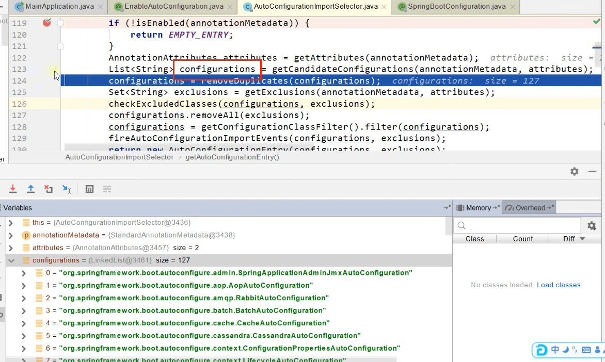

1. 自动配置原理
- 24.1.6 21:59 开始
- 24.1.7 00:39 更新
1.1. @SpringBootApplication
@SpringBootConfiguration
@EnableAutoConfiguration
@ComponentScan(
excludeFilters = {@Filter(
type = FilterType.CUSTOM,
classes = {TypeExcludeFilter.class}
), @Filter(
type = FilterType.CUSTOM,
classes = {AutoConfigurationExcludeFilter.class}
)}
)
- @SpringBootConfiguration：也就是@Configuration，代表当前是一个配置类。
- @ComponentScan：指定扫描哪些。
- @EnableAutoConfiguration：激活自动配置。
@AutoConfigurationPackage// 下面分析
@Import({AutoConfigurationImportSelector.class})// 下面分析
public @interface EnableAutoConfiguration
1.2. @AutoConfigurationPackage
// 给容器中导入一个组件
@Import({AutoConfigurationPackages.Registrar.class})
public @interface AutoConfigurationPackage
- 利用Registrar给容器中导入一系列组件。
- 指定的一个包下的所有组件导入进来，默认
xxxApplication所在包下。
Registrar：
static class Registrar implements ImportBeanDefinitionRegistrar, DeterminableImports {
Registrar() {
}
public void registerBeanDefinitions(AnnotationMetadata metadata, BeanDefinitionRegistry registry) {
AutoConfigurationPackages.register(registry, (String[])(new PackageImports(metadata)).getPackageNames().toArray(new String[0]));
}
public Set<Object> determineImports(AnnotationMetadata metadata) {
return Collections.singleton(new PackageImports(metadata));
}
}
- metadata：注解元信息，注解指的是
@AutoConfigurationPackage。 @AutoConfigurationPackage是标注在xxxApplication类上。- 计算包名：
new PackageImports(metadata)).getPackageNames()

- 所以
Registrar将xxxAplication所在包下的所有组件注册了。
1.3. @Import
@Import({AutoConfigurationImportSelector.class})
public class AutoConfigurationImportSelector {
...
@Override
public String[] selectImports(AnnotationMetadata annotationMetadata) {
if (!isEnabled(annotationMetadata)) {
return NO_IMPORTS;
}
AutoConfigurationEntry autoConfigurationEntry = getAutoConfigurationEntry(annotationMetadata);
return StringUtils.toStringArray(autoConfigurationEntry.getConfigurations());
}
...
}
- 调用关系
- 利用
getAutoConfigurationEntry(annotationMetadata)给容器中批量导入一些组件。
protected AutoConfigurationEntry getAutoConfigurationEntry(AnnotationMetadata annotationMetadata) {
if (!isEnabled(annotationMetadata)) {
return EMPTY_ENTRY;
}
AnnotationAttributes attributes = getAttributes(annotationMetadata);
// 寻找需要加载的候选配置类数组
List<String> configurations = getCandidateConfigurations(annotationMetadata, attributes);
configurations = removeDuplicates(configurations);
Set<String> exclusions = getExclusions(annotationMetadata, attributes);
checkExcludedClasses(configurations, exclusions);
configurations.removeAll(exclusions);
configurations = getConfigurationClassFilter().filter(configurations);
fireAutoConfigurationImportEvents(configurations, exclusions);
return new AutoConfigurationEntry(configurations, exclusions);
}
- 调用
getCandidateConfigurations，获取到所有需要导入到容器中的配置类。
List<String> configurations = getCandidateConfigurations(annotationMetadata, attributes);
- Debug调试，查看有127个候选配置组件：

1.4. getCandidateConfigurations
getCandidateConfigurations调用了ImportCandidates.load：
protected List<String> getCandidateConfigurations(AnnotationMetadata metadata, AnnotationAttributes attributes) {
List<String> configurations = ImportCandidates.load(AutoConfiguration.class, getBeanClassLoader())
.getCandidates();
Assert.notEmpty(configurations,
"No auto configuration classes found in "
+ "META-INF/spring/org.springframework.boot.autoconfigure.AutoConfiguration.imports. If you "
+ "are using a custom packaging, make sure that file is correct.");
return configurations;
}
ImportCandidates.load从META-INF/spring/%s.imports位置来加载一个文件：
public static ImportCandidates load(Class<?> annotation, ClassLoader classLoader) {
Assert.notNull(annotation, "'annotation' must not be null");
ClassLoader classLoaderToUse = decideClassloader(classLoader);
String location = String.format("META-INF/spring/%s.imports", annotation.getName());
Enumeration<URL> urls = findUrlsInClasspath(classLoaderToUse, location);
List<String> importCandidates = new ArrayList();
while(urls.hasMoreElements()) {
URL url = (URL)urls.nextElement();
importCandidates.addAll(readCandidateConfigurations(url));
}
return new ImportCandidates(importCandidates);
}
- 查看spring-boot-autoconfigure-3.2.1jar的META-INF:
- spring.boot2.7起使用META-INF/spring/org.springframework.boot.autoconfigure.AutoConfiguration.imports文件来指定需要加载自动配置类
1.5. 按需开启自动配置项
- 虽然我们127个场景的所有自动配置启动的时候默认全部加载。xxxxAutoConfiguration
- 按照条件装配规则（@Conditional），最终会按需配置。
1.6. AopAutoConfiguration
// 我是一个配置类
@AutoConfiguration
// 判断配置文件中是否存在“spring.aop”，且名字为“auto”，且值为true，则配置类生效；
// matchIfMissing = true：如果没有配，也认为配置了，并且值为true，所以默认不配也是生效。
@ConditionalOnProperty(prefix = "spring.aop", name = "auto", havingValue = "true", matchIfMissing = true)
public class AopAutoConfiguration {
// 我是一个配置类
@Configuration(proxyBeanMethods = false)
// 如果整个应用没有`Advice`类（org.aspectj.weaver.Advice），则不生效；
// 默认没有`Advice`类，所以默认不生效。
@ConditionalOnClass(Advice.class)
static class AspectJAutoProxyingConfiguration {
...
}
@Configuration(proxyBeanMethods = false)
// 如果没有“org.aspectj.weaver.Advice”类，则生效；
// 默认是没有的，所有默认生效。
@ConditionalOnMissingClass("org.aspectj.weaver.Advice")
// 默认开启aop功能
@ConditionalOnProperty(prefix = "spring.aop", name = "proxy-target-class", havingValue = "true",
matchIfMissing = true)
static class ClassProxyingConfiguration {
...
}
}
1.7. CacheAutoConfiguration
@AutoConfiguration(after = { CouchbaseDataAutoConfiguration.class, HazelcastAutoConfiguration.class,
HibernateJpaAutoConfiguration.class, RedisAutoConfiguration.class })
// 判断是否存在`CacheManager.class`类，不存在，则不生效；
// 默认是有的，条件通过；
@ConditionalOnClass(CacheManager.class)
// 默认是没有的，条件不通过，配置不生效。
@ConditionalOnBean(CacheAspectSupport.class)
@ConditionalOnMissingBean(value = CacheManager.class, name = "cacheResolver")
@EnableConfigurationProperties(CacheProperties.class)
@Import({ CacheConfigurationImportSelector.class, CacheManagerEntityManagerFactoryDependsOnPostProcessor.class })
public class CacheAutoConfiguration {
...
}
1.8. DispatcherServletAutoConfiguration
@AutoConfigureOrder(Ordered.HIGHEST_PRECEDENCE)
// 判断是否在`ServletWebServerFactoryAutoConfiguration`配置完成之后
@AutoConfiguration(after = ServletWebServerFactoryAutoConfiguration.class)
// 判断是否是原生servlet的应用，还有一种是响应式编程`WebFlux`
@ConditionalOnWebApplication(type = Type.SERVLET)
// 判断是否导入了`DispatcherServlet`类，因为注册了springmvc的starter，所以导入了。
@ConditionalOnClass(DispatcherServlet.class)
public class DispatcherServletAutoConfiguration {
...
@Configuration(proxyBeanMethods = false)
@Conditional(DefaultDispatcherServletCondition.class)
// 判断是否导入`ServletRegistration`
@ConditionalOnClass(ServletRegistration.class)
// 开启配置绑定功能，配置文件中以“spring.mvc”开头的属性，
// 会被绑定至`WebMvcProperties`实例。
@EnableConfigurationProperties(WebMvcProperties.class)
protected static class DispatcherServletConfiguration {
// 配置`DispatcherServlet`组件，指定名字。
@Bean(name = DEFAULT_DISPATCHER_SERVLET_BEAN_NAME)
public DispatcherServlet dispatcherServlet(WebMvcProperties webMvcProperties) {
...
return dispatcherServlet;
}
@SuppressWarnings({ "deprecation", "removal" })
private void configureThrowExceptionIfNoHandlerFound(WebMvcProperties webMvcProperties,
DispatcherServlet dispatcherServlet) {
dispatcherServlet.setThrowExceptionIfNoHandlerFound(webMvcProperties.isThrowExceptionIfNoHandlerFound());
}
// 配置文件上传解析器组件
@Bean
@ConditionalOnBean(MultipartResolver.class)
// 容器中没有名字为“multipartResolver”的组件
@ConditionalOnMissingBean(name = DispatcherServlet.MULTIPART_RESOLVER_BEAN_NAME)
public MultipartResolver multipartResolver(MultipartResolver resolver) {
// 给@Bean标注的方法传入了对象参数，这个参数的值就会从容器中找。
// SpringMVC multipartResolver。防止有些用户配置的文件上传解析器不符合规范
// Detect if the user has created a MultipartResolver but named it incorrectly
return resolver;
}
}
...
}
1.9. HttpEncodingAutoConfiguration
@AutoConfiguration
// 配置绑定至`ServerProperties`类
@EnableConfigurationProperties(ServerProperties.class)
// 是否是Servlet应用
@ConditionalOnWebApplication(type = ConditionalOnWebApplication.Type.SERVLET)
// 是否存在`CharacterEncodingFilter`类
@ConditionalOnClass(CharacterEncodingFilter.class)
// 默认开启encoding
@ConditionalOnProperty(prefix = "server.servlet.encoding", value = "enabled", matchIfMissing = true)
public class HttpEncodingAutoConfiguration {
private final Encoding properties;
public HttpEncodingAutoConfiguration(ServerProperties properties) {
this.properties = properties.getServlet().getEncoding();
}
@Bean
// 容器中如果没有配CharacterEncodingFilter，自动配置
// SpringBoot默认会在底层配好所有的组件。但是如果用户自己配置了以用户的优先
@ConditionalOnMissingBean
public CharacterEncodingFilter characterEncodingFilter() {
CharacterEncodingFilter filter = new OrderedCharacterEncodingFilter();
filter.setEncoding(this.properties.getCharset().name());
filter.setForceRequestEncoding(this.properties.shouldForce(Encoding.Type.REQUEST));
filter.setForceResponseEncoding(this.properties.shouldForce(Encoding.Type.RESPONSE));
return filter;
}
...
}
1.10. 总结
- SpringBoot先加载所有的自动配置类（xxxxxAutoConfiguration）。
- 每个自动配置类按照条件进行生效，默认都会绑定配置文件指定的值。
- xxxxProperties里面拿，xxxProperties和配置文件进行了绑定。
- 生效的配置类就会给容器中装配很多组件。
- 只要容器中有这些组件，相当于这些功能就有了。
- 定制化配置
- 用户直接自己@Bean替换底层的组件。
- 用户去看这个组件是获取的配置文件什么值就去修改。
xxxxxAutoConfiguration ---> 组件 ---> xxxxProperties里面拿值 ----> application.properties